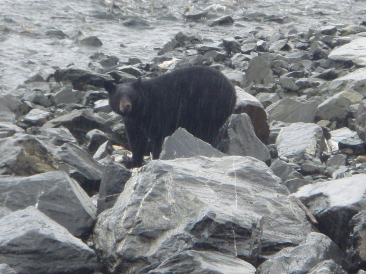
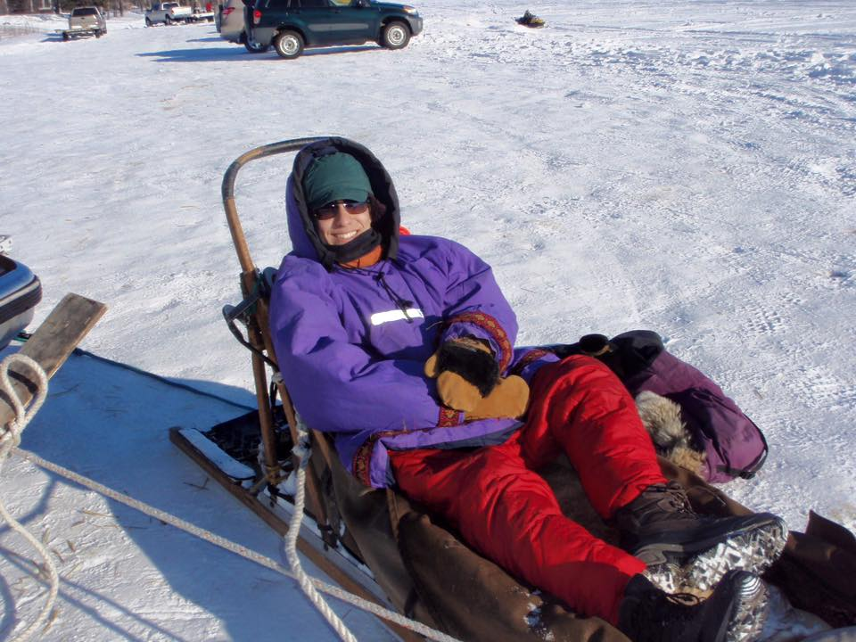
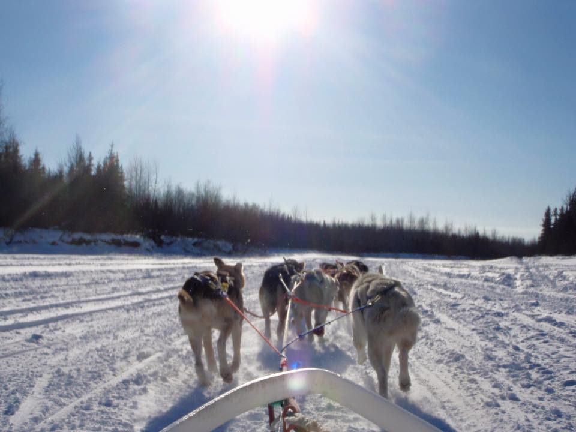

parrafo de prueba, salto de linea otro salto
Oso negro, una foto que saque en la carretera
Foto del viaje en trineo de perros
Otra foto más:
 by Norman OlidenCall me Ishmael. Some years ago–never mind how long precisely–having little or no money in my purse, and nothing particular to interest me on shore, I thought I would sail about a little and see the watery part of the world. It is a way I have of driving off the spleen and regulating the circulation.